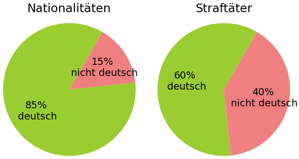

Der Satz von Bayes erlaubt das Ziehen eines Umkehrschlusses bei bedingten Wahrscheinlichkeiten. Ich möchte ihn hier anhand eines einfachen Beispiels erklären. Es soll darauf hingewiesen werden, dass es in diesem Artikel lediglich darum geht, den Satz von Bayes anhand eines Beispiels zu erklären, welches nicht dem Standardbeispiel "falsch positiver Medizintest" entspricht.
In Deutschland waren im Jahr 2023 etwa 83 Millionen Menschen gemeldet. Davon besaßen etwa 85% die deutsche Staatsbürgerschaft und 15% hatten keinen deutschen Pass. Die Menschen mit deutschem Pass werden nachfolgend mit "D" abgekürzt wohingegen die ohne deutschen Pass mit "A" abgekürzt werden. Schaut man sich die Kriminalstatistik des Bundeskriminalamts für das Jahr 2023 an, so ist dort in Kapitel 7.1 angegeben, dass etwa 60% der Tatverdächtigen deutsche Staatsbürger waren und etwa 40% der Tatverdächtigen keinen deutschen Pass hatten. Unter der Annahme, dass Tatverdächtige mit deutschem Pass mit gleicher Wahrscheinlichkeit überführt werden wie solche ohne deutschen Pass, kann man also davon ausgehen, dass sich bei den Straftätern eine ähnliche Verteilung ergibt. Ein Straftäter wird im folgenden mit "S" abgekürzt.

Nun könnte uns bspw. interessieren, wie hoch die Wahrscheinlichkeit ist, dass ein Ende 2023 in Deutschland angetroffener Mensch im Jahr 2023 eine Straftat in Deutschland begangen hat, wenn wir wissen, dass diese Person keinen deutschen Pass hat. Wir könne diese bedingte Wahrscheinlichkeit als \(P(S|A)\) bezeichnen.
Zunächst könnte man annehmen, dass \(P(S|A) = P(A|S)\) gilt. Denn \(P(A|S)\) kennen wir bereits. Das ist die Wahrscheinlichkeit, dass jemand keinen deutschen Pass hat, sofern wir wissen, dass diese Person im Jahr 2023 in Deutschland eine Straftat begangen hat. Sie liegt bei den oben angegebenen 40%. Wenn wir jetzt fälschlicher Weise annehmen, dass die Wahrscheinlichkeit \(P(S|A)\) ebenso 40% beträgt, begehen wir einen gewaltigen Fehler. Denn natürlich sind nicht 40% der Menschen ohne deutschen Pass Straftäter, nur weil 40% der Straftäter keinen deutschen Pass haben. Hier hilft uns der Satz von Bayes den Umkehrschluss zu ziehen. Er besagt für dieses Beispiel:
\(P(A)\) beschreibt dabei die Wahrscheinlichkeit eine Person ohne deutschen Pass in Deutschland anzutreffen und liegt bei den erwähnten 15%. \(P(S)\) beschreibt die Wahrscheinlichkeit, dass ein in Deutschland angetroffener Mensch im Jahr 2023 in Deutschland eine Straftat begangen hat. Da wir wissen wollen ob die Person eine Straftat begangen hat und nicht nur, ob sie tatverdächtig war, werden wir wieder annehmen, dass Straftäter mit deutschem Pass mit gleicher Häufigkeit überführt werden, wie solche ohne deutschen Pass. Laut Kriminalstatistik wurden 2023 2,2 Millionen Tatverdächtige registriert. Natürlich sind nicht all diese Menschen auch Straftäter da sie lediglich verdächtig sind. Um diesen Fehler auszugleichen ignorieren wir auch alle Straftäter die nicht entdeckt oder angezeigt wurden. Wir können also schätzen, dass in Deutschland im Jahr 2023 etwa 2,7% der Gemeldeten eine Straftat begangen haben.
Somit ergibt sich aus dem Satz von Bayes, dass eine Ende 2023 in Deutschland angetroffene Person, die keinen deutschen Pass besitzt, mit einer Wahrscheinlichkeit \(P(S|A)\) von 7.2%, im Jahr 2023 eine Straftat in Deutschland begangen hat.
Nun interessiert uns noch \(P(S|D)\). Also wie hoch die Wahrscheinlichkeit ist, dass ein Ende 2023 in Deutschland angetroffener Mensch im Jahr 2023 eine Straftat in Deutschland begangen hat, wenn wir wissen, dass dieser Mensch den deutschen Pass besitzt. Hier kommen wir mithilfe des Satzes von Bayes auf 1,9%.
Nun schauen wir uns noch den Quotienten \(\frac{P(S|A)}{P(S|D)}\) an. Das schöne dabei ist, dass man hierzu \(P(S)\) nicht kennen muss, da es sich herauskürzt. Der Quotient der bedingten Wahrscheinlichkeiten zeigt, dass eine Ende 2023 in Deutschland angetroffene Person im Jahr 2023, 3,7 Mal so wahrscheinlich eine Straftat in Deutschland begangen hat, wenn sie keinen deutschen Pass hat.